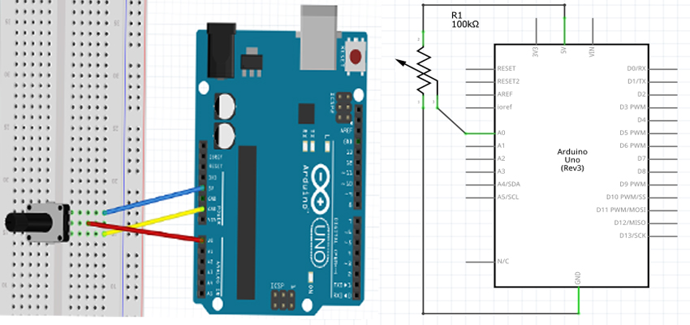

A potentiometer is a simple knob that provides a variable resistance, which we can read into the Arduino board as an analog value.In this example, we read the value of Potentiometer and display it in serial monitor.
We connect three wires to the Arduino board. The first goes to ground from one of the outer pins of the potentiometer. The second goes from 5 volts to the other outer pin of the potentiometer. The third goes from analog input 2 to the middle pin of the potentiometer.
By turning the shaft of the potentiometer, we change the amount of resistence on either side of the wiper which is connected to the center pin of the potentiometer. This changes the relative "closeness" of that pin to 5 volts and ground, giving us a different analog input. When the shaft is turned all the way in one direction, there are 0 volts going to the pin, and we read 0. When the shaft is turned all the way in the other direction, there are 5 volts going to the pin and we read 1023. In between, analogRead() returns a number between 0 and 1023 that is proportional to the amount of voltage being applied to the pin.
Bread Board Layout
Arduino Code-Analog Read
/*
Analog Input
*/
int potPin = 0;
void setup()
{
Serial.begin(9600);
}
void loop()
{
int reading = analogRead(potPin);
Serial.println(reading);
delay(500);
}